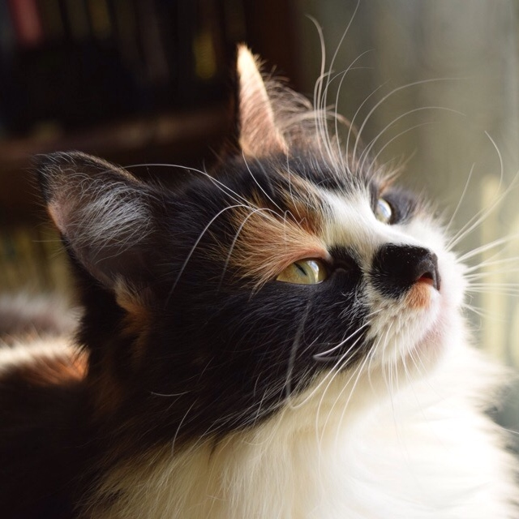
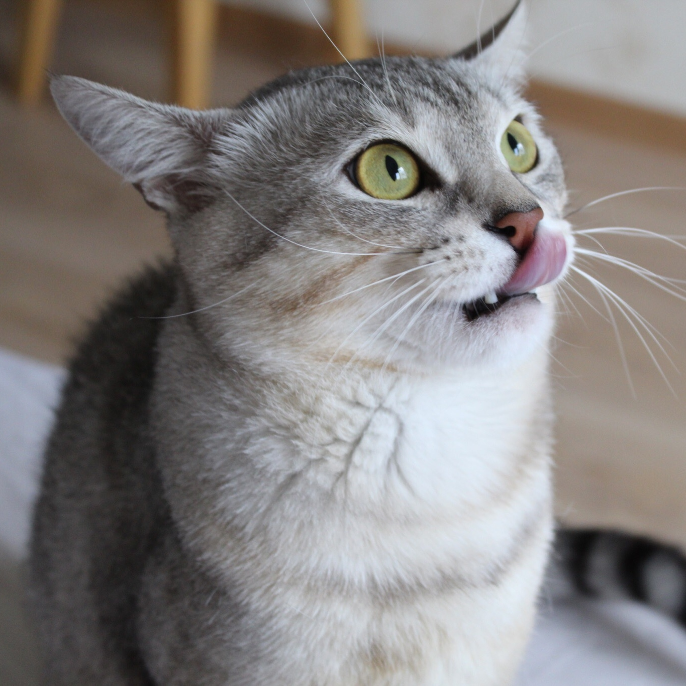
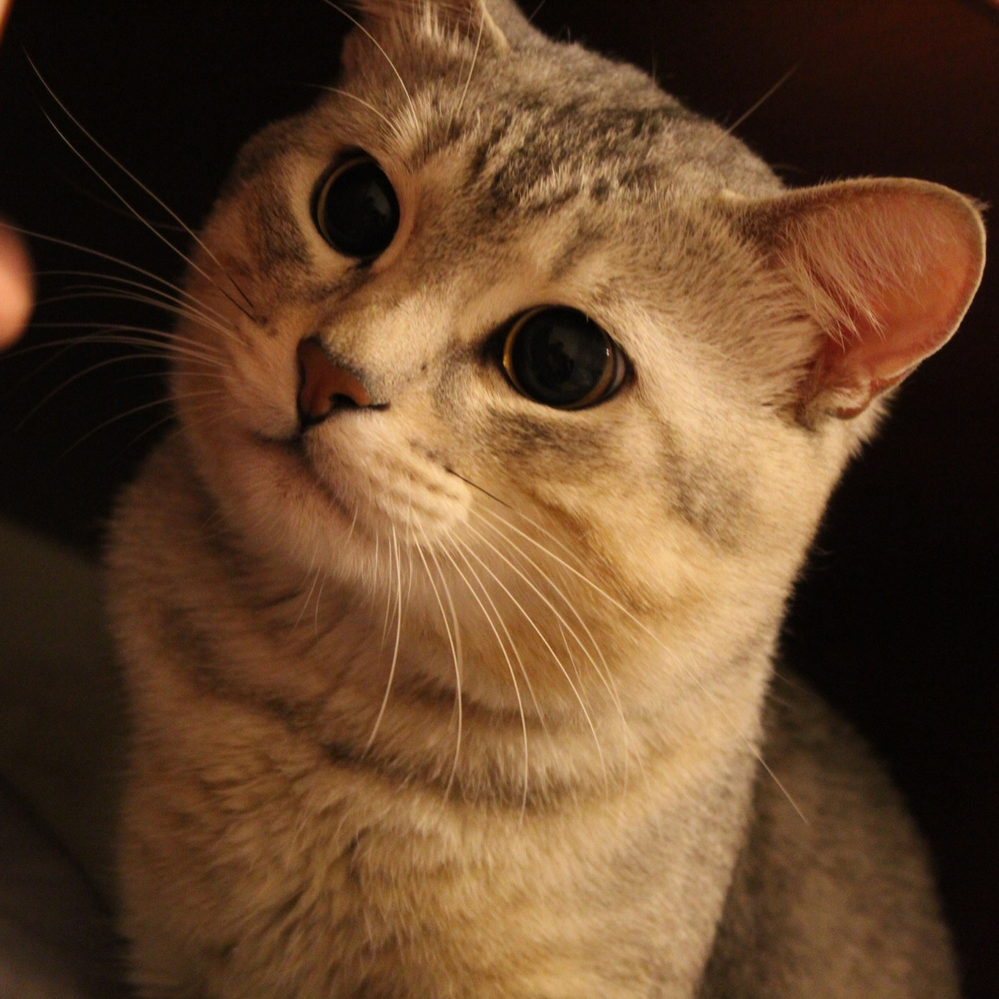
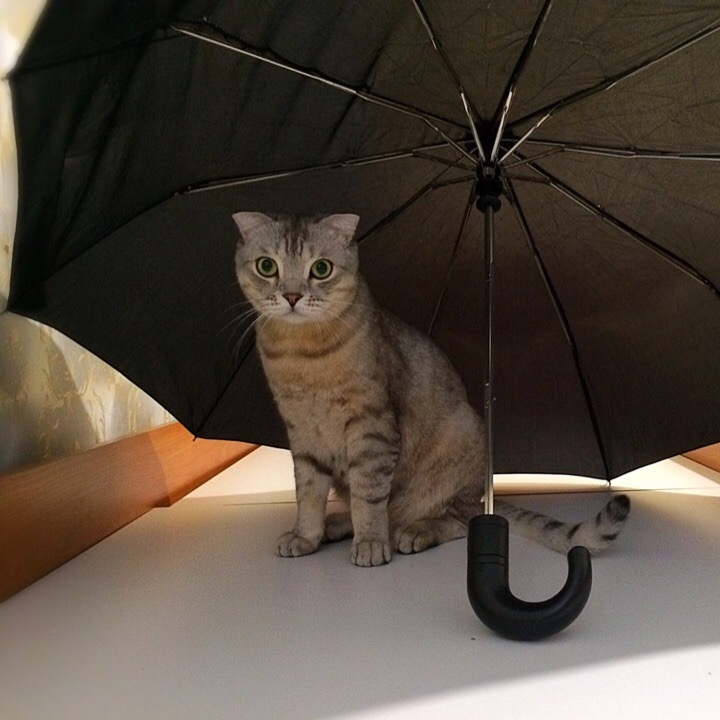
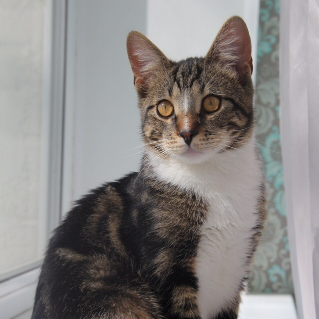
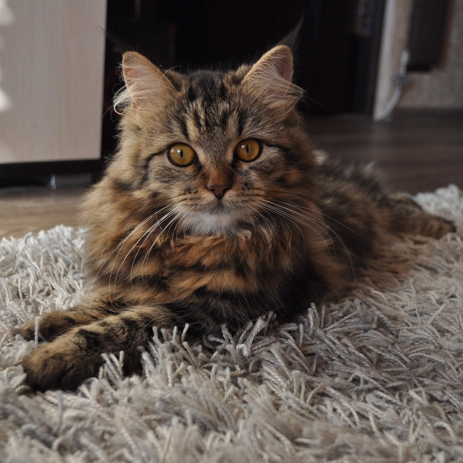
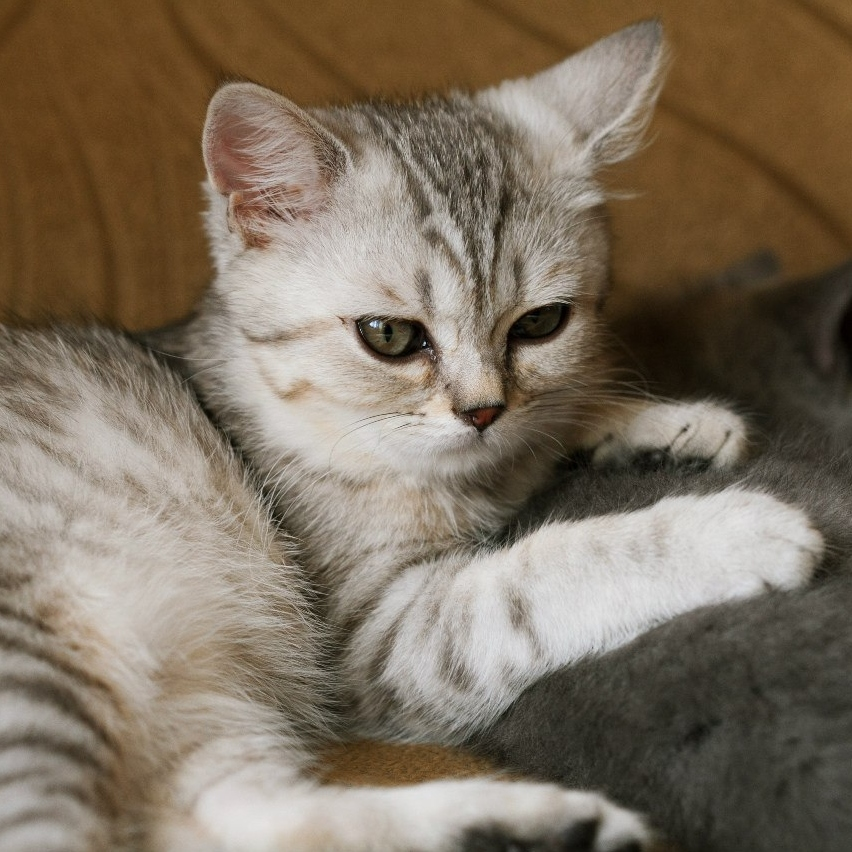
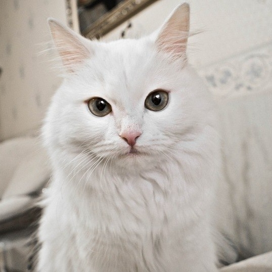

Активная, игривая
Возраст 1,5 года.
Очень любит детей, чистоплотная.
Не любит, когда незнакомцы берут её на руки, но не царапается, а просто убегает.

Активный, непоседа.
Возраст 8 месяцев.
Весёлый и активный пацан, хотели себе оставить, но переезжаем.
Отдадим в добрые руки. На задней левой лапе есть очень красивое пятнышко.

Спокойная, умная.
Возраст 6 месяцев.
Отдадим очень умную и ласковую кошечку в хорошие руки.
Уживается и с детьми, и с другими питомцами. Не любит, когда трогают за хвост.

Озорной, забавный, ласковый.
Возраст 8 месяцев.
Очень фотогиеничный кот. Отдам в хорошие руки.
Немного привередливый, но если его погладить, то согласится на всё,
что вы у него попросите. Есть аллергия на рыбу.

Активная, общительная.
Возраст 10 месяцев.
Любит детей, взрослых, других питомцев. Чересчур активная, когда много гостей.

Спокойный, дружелюбный.
Возраст 2 года.
Родилась дочка, у неё аллергия на котов, поэтому срочно ищем нового хозяина
для нашего кота. Из особенностей: очень редко есть корм, любит человеческую еду.

Глупенький, забавный.
Возраст 1 месяц.
Мало ест, мало спит, но любит проводить время с другими котами.

Нежная, спокойная, ласковая.
Возраст 1,5 года.
Очень ласковая, добрая, к горшку приучена, стерилизованная и привитая.
Лоточек и миски отдадим вместе с кошечкой.
Доверим только в самые заботливые и любящие руки.